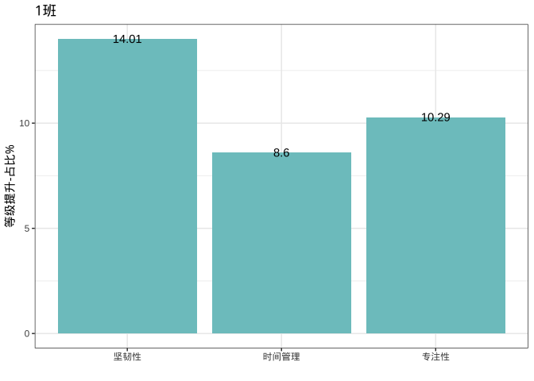
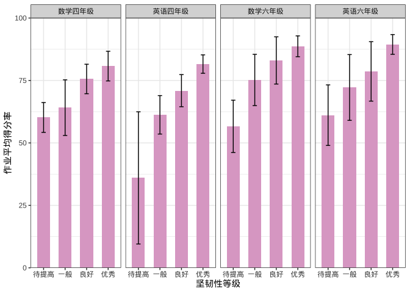
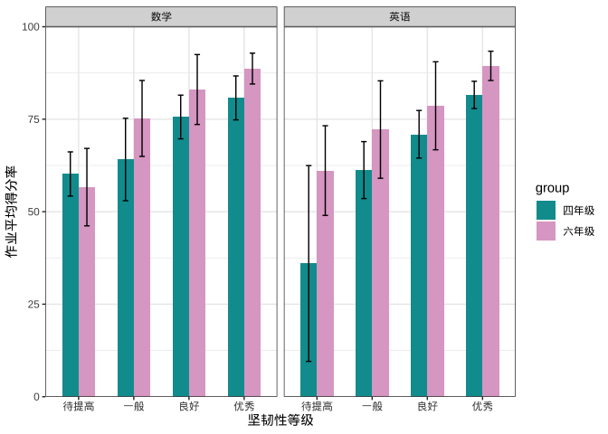
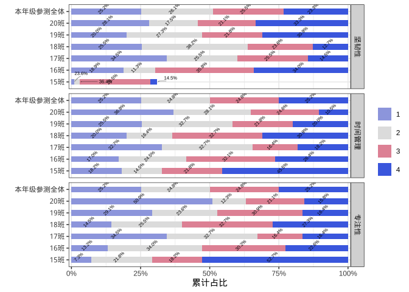
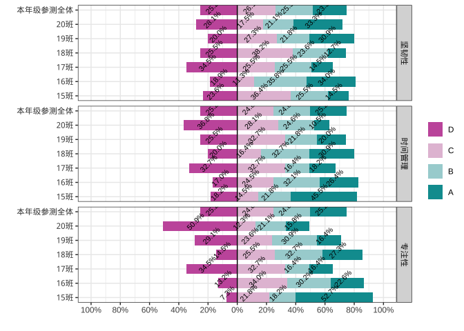
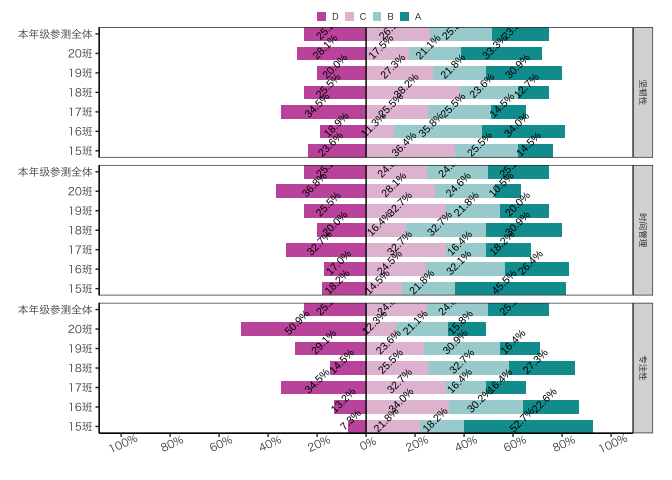

为了更高效的算算算、画画画。
Installation
devtools::install_local("~/Nutstore Files/17zuoyegit/YQzuoye_0.1.3.tar.gz")
library(YQzuoye)Usage
IRT
# 基础irt模型
yq_irt(input)
# input is a list, conclude item dimension information, score data and other configuration information.
# 题目信息量
teminfox(Theta,
it,
model = "undefined",
D = 1,
total.info = TRUE
)
# 测验信息量
testinfox(
it = as.matrix(par.x[, -1]),
Theta,
individual = FALSE,
model = "undefined",
which.items = 1:nrow(it)
)IRT example
# load score data
data(score_mat)
# load tag data
data(TAG)
dim_vector <- TAG %>% filter(tag_type == "认知") %>% to_dim_vector(score_data = score_mat[,-1],.,'qid','dim',levels = unique(.[,'dim']))
# load max_score data
data(max_score)
# make input
input <- list()
input$score_mat <- score_mat[,-1]
input$irt_type <- 1
input$locate_parameter <- TRUE
input$calling_count <- 0
# input$item_info$max_score <- max_score
input$item_info$dim_vector <- dim_vector
out <- yq_irt(input)
#> Warning in yq_irt(input): 未指定题目满分值，将使用作答矩阵中出现的最高分值。
#> Warning in yq_irt(input): 有3道题得分点过多，已强制划分为20个以内的分数段,最低分数区间1分。
#> R process: CTT done.
#> Start unidimensional irt estimation now :
#> R process: irt done.
#> Start multidimensional irt estimation now :
#> 维度 1 估计中
#> 维度 2 估计中
#> R process: multi irt done.
str(out)
#> List of 4
#> $ paper :List of 2
#> ..$ irt_reliability: num 0.935
#> ..$ ctt_reliability: num 0.894
#> $ item :List of 5
#> ..$ itemName : chr [1:44] "Q1" "Q2" "Q3" "Q4" ...
#> ..$ ctt_alpha: num [1:44] 0.45 0.27 0.845 0.811 0.589 ...
#> ..$ ctt_beta : num [1:44] 0.892 0.956 0.549 0.896 0.6 ...
#> ..$ irt_alpha: num [1:44] 1.649 1.611 0.686 0.665 0.418 ...
#> ..$ irt_beta : num [1:44] -1.937 -2.504 -0.132 -2.138 -1.106 ...
#> $ theta :List of 3
#> ..$ subject_theta : num [1:345] 1.58 0.531 0.118 -0.833 0.836 ...
#> ..$ subject_theta_se: num [1:345] 0.408 0.334 0.231 0.251 0.311 ...
#> ..$ beta_theta_fit : num [1:345] 0.182 0.176 0.273 0.158 0.227 ...
#> $ media_theta:List of 2
#> ..$ : num [1:345] 1.5699 0.4375 0.0753 -0.6825 0.9131 ...
#> ..$ : num [1:345] 0.714 0.769 0.518 -1.333 0.168 ...增值评价
data <- data.frame(`2018年-认知` = rnorm(1000), `2019年-认知` = rnorm(1000, 1, 1) + rnorm(1000), 学校 = rep(paste0("班级", 1:20), each = 50), dim_name = "认知")
# 增值结果
res <- hlm_value_added(data, group = "学校", pre = 1, after = 2, time = c("2018", "2019"), dim_name = "认知")
#> boundary (singular) fit: see help('isSingular')
str(res)
#> List of 1
#> $ 认知:List of 2
#> ..$ sch_add:'data.frame': 20 obs. of 4 variables:
#> .. ..$ 认知.2018.2019.sch_add: num [1:20] 0 0 0 0 0 0 0 0 0 0 ...
#> .. ..$ 认知.2018.2019.rank : int [1:20] 16 9 6 17 4 1 19 15 10 13 ...
#> .. ..$ 认知.2018.2019.q_rank : chr [1:20] "Q1" "Q1" "Q1" "Q1" ...
#> .. ..$ 认知.2018.2019.merge : chr [1:20] "0(Q1)" "0(Q1)" "0(Q1)" "0(Q1)" ...
#> .. ..- attr(*, "postVar")= num [1, 1, 1:20] 1.25e-17 1.25e-17 1.25e-17 1.25e-17 1.25e-17 ...
#> ..$ per_add:'data.frame': 1000 obs. of 1 variable:
#> .. ..$ 认知.2018.2019.per_add: num [1:1000] 1.15 1.204 -0.531 -0.227 3.04 ...学习品质
# 坚韧性
tenacity(input_data, P = 0.6)
# 时间管理
time_manage(input_data)
# 专注性
concentrate(input_data, set_time = T)
# 数据清洗
check_pen(data) # 检查点阵笔作答时间
clean_paper(data) # 清洗试卷信息表
clean_pen(data = data,dayinfo = dayinfo) #根据作答时间清洗点阵笔数据报告生产工具
数据处理与统计计算
#保留两位便捷函数
mean2(4.5567)
#> [1] 4.56
sd2(rnorm(100))
#> [1] 0.98
cvf(rnorm(100))
#> [1] "-969.5%"
# 四舍五入
round2(1.25,1)
#> [1] 1.3
round(1.25,1)
#> [1] 1.2
# irt之前的重编码数据，使数据从0开始。
recode2(c(1,2,4,5))
#> [1] 0 1 2 3
# 归一化
scaleone(seq(-3,3,0.5)) # x需为z分数
#> [1] 0.000 0.000 0.000 0.125 0.250 0.375 0.500 0.625 0.750 0.875 1.000 1.000
#> [13] 1.000
toone(rnorm(10)) # 任意分数归一化
#> [1] 0.4119010 0.4784113 0.0000000 0.9039380 0.3851611 0.5196065 0.4290555
#> [8] 0.6978734 0.4234572 1.0000000
# Z转3等级
zto3(data.frame(x1=seq(-3,3,0.5),x2=seq(-3,3,0.5))) #zscore must be a matrix or data.frame
#> x1 x2
#> [1,] "低" "低"
#> [2,] "低" "低"
#> [3,] "低" "低"
#> [4,] "低" "低"
#> [5,] "低" "低"
#> [6,] "中" "中"
#> [7,] "中" "中"
#> [8,] "中" "中"
#> [9,] "高" "高"
#> [10,] "高" "高"
#> [11,] "高" "高"
#> [12,] "高" "高"
#> [13,] "高" "高"
# 根据四分位数转4等级
torank(seq(-3,3,0.1)) # input_data is a vector
#> [1] 1 1 1 1 1 1 1 1 1 1 1 1 1 1 1 1 2 2 2 2 2 2 2 2 2 2 2 2 2 2 2 3 3 3 3 3 3 3
#> [39] 3 3 3 3 3 3 3 3 4 4 4 4 4 4 4 4 4 4 4 4 4 4 4
# outlier处理
cap_outlier(seq(-3,3,0.1))
#> [1] -2.994 -2.900 -2.800 -2.700 -2.600 -2.500 -2.400 -2.300 -2.200 -2.100
#> [11] -2.000 -1.900 -1.800 -1.700 -1.600 -1.500 -1.400 -1.300 -1.200 -1.100
#> [21] -1.000 -0.900 -0.800 -0.700 -0.600 -0.500 -0.400 -0.300 -0.200 -0.100
#> [31] 0.000 0.100 0.200 0.300 0.400 0.500 0.600 0.700 0.800 0.900
#> [41] 1.000 1.100 1.200 1.300 1.400 1.500 1.600 1.700 1.800 1.900
#> [51] 2.000 2.100 2.200 2.300 2.400 2.500 2.600 2.700 2.800 2.900
#> [61] 2.994
# 百分等级
percentile_rank(seq(-3,3,0.1))
#> [1] 0.8196721 2.4590164 4.0983607 5.7377049 7.3770492 9.0163934
#> [7] 10.6557377 12.2950820 13.9344262 15.5737705 17.2131148 18.8524590
#> [13] 20.4918033 22.1311475 23.7704918 25.4098361 27.0491803 28.6885246
#> [19] 30.3278689 31.9672131 33.6065574 35.2459016 36.8852459 38.5245902
#> [25] 40.1639344 41.8032787 43.4426230 45.0819672 46.7213115 48.3606557
#> [31] 50.0000000 51.6393443 53.2786885 54.9180328 56.5573770 58.1967213
#> [37] 59.8360656 61.4754098 63.1147541 64.7540984 66.3934426 68.0327869
#> [43] 69.6721311 71.3114754 72.9508197 74.5901639 76.2295082 77.8688525
#> [49] 79.5081967 81.1475410 82.7868852 84.4262295 86.0655738 87.7049180
#> [55] 89.3442623 90.9836066 92.6229508 94.2622951 95.9016393 97.5409836
#> [61] 99.1803279
# 几何平均数
geom_mean(c(40,52,65,75,86,97))
#> [1] 1.19383
# same as:
psych::geometric.mean(c(1.3,1.25,1.154,1.147,1.128))
#> [1] 1.193951
geom_mean(data.frame(d1=c(40,52,65,75,86,97),d2=c(40,52,65,75,86,97)),by_row=F)
#> d1 d2
#> 1.19383 1.19383画图工具
data <- data.frame(x = paste0("班级", 1:10), y = rnorm(10, 0, 5))
# 增值量柱状图
bar_1(data) + theme_bw()

data <- data.frame(x = c("坚韧性", "专注性", "时间管理"), y = rnorm(3, 10, 5))
# 普通柱状图
bar_2(data) + theme_bw()
# 带误差线的柱状图
data(bar_data)
# 分面柱形图
bar_error(data = dat_p, x = "等级", xname = "坚韧性等级", yname = "作业平均得分率", facet_rows = "facet") + theme_bw()
# 更换颜色
bar_error(data = dat_p, x = "等级", xname = "坚韧性等级", yname = "作业平均得分率", group = NULL, fill_color = "#DEA9CC", facet_rows = "facet") + theme_bw()
# 根据年级分组，根据年级填色
bar_error(data = dat_p, x = "等级", xname = "坚韧性等级", yname = "作业平均得分率", group = dat_p$年级, fill_color = c("#009B9F", "#DEA9CC"), facet_rows = "facet") + theme_bw()
# 按年级分组，按年级填色，按学科分面
bar_error(data = dat_p, x = "等级", xname = "坚韧性等级", yname = "作业平均得分率", group = dat_p$年级, fill_color = c("#009B9F", "#DEA9CC"), facet_rows = "学科") + theme_bw()
#'
# 折线图
data <- data.frame(作业顺序_ = rep(c(2018:2020), 3), IRT均值 = rnorm(9, 10, 5), 班级 = rep(paste0("班级", 1:3), each = 3))
line_dot_1(data = data, x = "作业顺序_", y = "IRT均值", group = "班级", title = "", ytitle = "IRT均值", xtitle = "作业次数") + theme_plot1()
# 普通横向堆积条形图
data(plot_dat)
dat <- stack_plot_dat
# 不需要拉线
stack_plot(
data = dat, y = dat$率,
x = dat$班级, label = dat$率x, fill = factor(dat$标签), facet_rows = "维度"
) + theme_light()
# 如果需要拉线，则需增加累积值这一列数据
dat$率[1] <- 0.01
dat$率[2] <- 0.02
dat$率[4] <- 0.025
dat <- dat %>%
group_by(班级) %>%
mutate(累积值 = cumsum(率))
stack_plot(
data = dat, y = dat$率,
x = dat$班级, label = dat$率x, fill = factor(dat$标签), facet_rows = "维度", low_line = T
) +
theme_bw() +
coord_flip()
#> Warning: Removed 3 rows containing missing values (geom_text).
#> Warning: Removed 81 rows containing missing values (geom_text_repel).
# 垂直D等级分界-堆积条形图
data(plot_dat)
dat <- stack_plot_dat
stack_plot_cut(
data = dat, y = ifelse(dat$标签 %in% c("1"), -dat$率, dat$率),
x = dat$班级, label = dat$率x, fill = factor(dat$标签), facet_rows = "维度"
) + theme_bw()
# 水平D等级分界-堆积条形图
data(plot_dat)
dat <- stack_plot_dat
stack_plot_cut_v(
data = dat, y = dat$班级,
x = ifelse(dat$标签 %in% c("1"), -dat$率, dat$率), label = dat$率x, fill = factor(dat$标签), facet_rows = "维度"
) + theme_bw()
# 换一种样式
stack_plot_cut_v(
data = dat, y = dat$班级,
x = ifelse(dat$标签 %in% c("1"), -dat$率, dat$率), label = dat$率x, fill = factor(dat$标签), facet_rows = "维度"
) + theme_plot1()